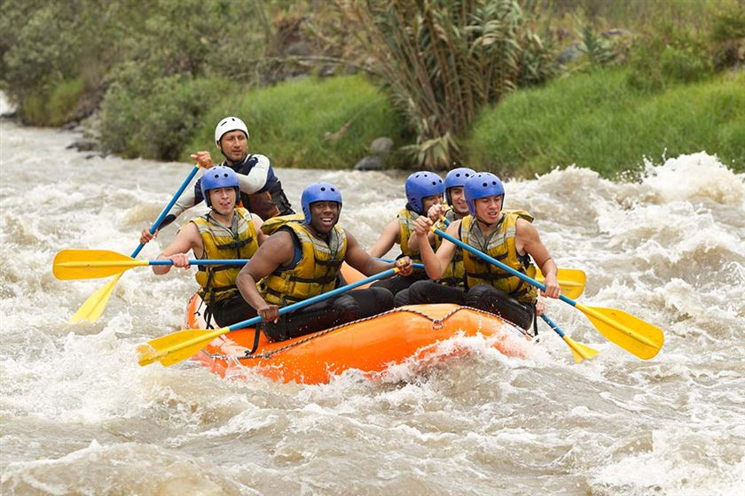

Our mission is simple: help every guest feel the rush of the river safely. Our certified guides lead each trip with care, skill, and plenty of fun, so you can paddle hard, laugh loud, and come home with stories to tell.

Our mission is simple: help every guest feel the rush of the river safely. Our certified guides lead each trip with care, skill, and plenty of fun, so you can paddle hard, laugh loud, and come home with stories to tell.
Splash White Water Rafting began in 2010 with one raft, two guides, and a love for wild rivers. Word spread quickly about our friendly guides and exciting trips. Today we run tours on several rivers and have welcomed thousands of guests, from first-time paddlers to experienced adventurers.